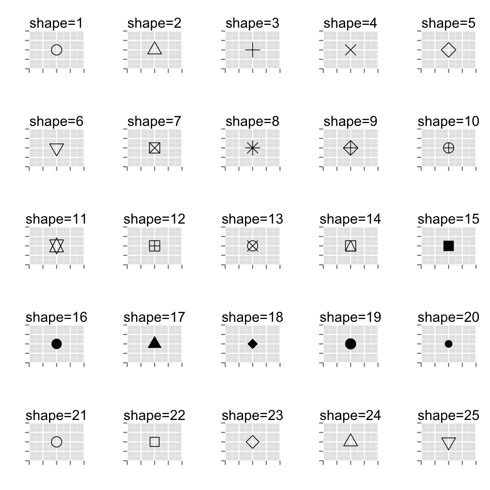

- Currently Sr. Engineer at Trend Micro
- Big data security analytics
- Data Mining Programmer at Newegg.com
- Recommender systems
- Master of Econ., NTU
- My LinkedIn Page
- Familar with:
- R, Stata, SAS, Python, ... ,etc.
illust. by RedEyeHare
Kyle Chung
DSConf 2014 Taipei
illust. by RedEyeHare
ggplot2?ggvis, rCharts, or googleVisggmapggplot
qplot (not recommended)data.frame; data to be plottedgeom_bar(), geom_line(), geom_point(), ...library(ggplot2)
ggplot(data=iris, aes(x=Sepal.Length, y=Sepal.Width)) + geom_point()
ggplot's behaviorggplot's behavior. Twice.str or class) before calling ggplotggplot2...siris <- iris[iris$Sepal.Length > median(iris$Sepal.Length),]
barplot(table(siris$Species))

graphics::barplot
graphics::barplot provides a flexability of different class/format of inputgraphics provide more or less flexability about the input dataggplot2, all plotting functions share the same behaviorggp <- ggplot(data=siris, aes(x=Species))
ggp + geom_bar()

ggp <- ggp + scale_x_discrete(drop=FALSE) # keep zero-occurence variable
ggp + geom_bar()
ggp <- ggp + ylab('Count') + ggtitle('Hello ggplot!')
ggp + geom_bar()

# want to customize colors? refer to: www.cookbook-r.com/Graphs/Colors_(ggplot2)/
ggp + geom_bar(fill='snow', color='black') # see colors() if you're picky

precounted <- as.data.frame(table(siris$Species, dnn=c('Species')))
ggplot(precounted, aes(x=Species, y=Freq)) + geom_bar(stat='identity')

## Species Freq
## 1 setosa 0
## 2 versicolor 26
## 3 virginica 44
stat='bin'ggplot(precounted, aes(x=reorder(Species, -Freq), y=Freq)) +
geom_bar(stat='identity') # The order is determined by factor levels
siris <- dplyr::mutate(siris, Fat=(Sepal.Width > median(Sepal.Width)))
# siris <- within(siris, Fat <- (Sepal.Width > median(Sepal.Width)))
ggp_bygrp <- ggplot(siris, aes(x=Species, fill=Fat)); ggp_bygrp + geom_bar()

fill to color...# see ?aes_colour_fill_alpha for more about color grouping
ggplot(siris, aes(x=Species, color=Fat)) + geom_bar()
ggp_bygrp + geom_bar(position='dodge') # ggp_bygrp + geom_bar(position=position_dodge(1))

ggplot(iris, aes(x=Sepal.Length)) + geom_bar() # a HISTOGRAM indeed!

ggplot(iris, aes(x=Sepal.Length, fill=Species)) +
geom_bar(position='identity', alpha=.4) # now we have seen stack, dodge, and identity

"God Help Those Who Help Themselves."
positions do we have in ggplot2?identity?stacking and dodgeing:# use constant
ggplot(siris, aes(x=Species, fill=Fat)) + geom_bar(position='dodge')
# or default full function call to the specific position
ggplot(siris, aes(x=Species, fill=Fat)) + geom_bar(position=position_dodge())
ggplot(iris, aes(x=Sepal.Length, fill=Species)) +
geom_density(position='identity', alpha=.4) # simply change geom_bar to geom_density
ggplot(iris, aes(x=Sepal.Length, fill=Species)) +
geom_bar(position='identity', alpha=.4) + geom_density(position='identity', alpha=.4)
ggplot(iris, aes(x=Sepal.Length, y=..density.., fill=Species)) +
geom_bar(position='identity', alpha=.4) + geom_density(position='identity', alpha=.4)
data("salary", package="DSC2014Tutorial") # or load('salary.RData')
par(family='Heiti TC Light') # for OS X (XQuartz device)
hist(salary_2013$平均工時, main=NULL)

ggplot(salary_2013, aes(x=reorder(行業,-平均工時), y=平均工時)) + # reorder x
geom_bar(stat='identity', alpha=.5) + # set transparency
labs(x='行業別', y='平均月（加班）工時', title='正常工時（虛）與加班工時（實）') +
theme(# for OS X (XQuartz device) to show Chinese characters
text=element_text(family='Heiti TC Light'),
# rotate angle of x ticks
axis.text.x=element_text(angle=90, hjust=1, vjust=.5),
# change size of title
plot.title=element_text(size=26)) +
# argument data is skipped in the second call to geom_bar
geom_bar(aes(x=行業, y=as.numeric(as.character(加班工時))), stat='identity') +
# add arbitrary text (refer to the bonus section of this lecture)
annotate('text', label='囧', color='red', family='Heiti TC Light', size=10, vjust=-.25,
x=which(levels(reorder(salary_2013$行業,-salary_2013$平均工時)) == '製造業'),
y=as.numeric(as.character(salary_2013[salary_2013$行業=='製造業', '加班工時'])))
graphics will NOT workggplot2 has its own interface for saving plots as external files
?ggsave for more detailsaggplot <- ggplot(iris, aes(x=Sepal.Length, fill=Species)) + geom_bar()
ggsave(filename='your_file_name.png', plot=aggplot)
# the device used is auto determined by the filename extension
# if plot is not specified, the last plot displayed will be saved
Yet another challenge. How to do this?

stat='identity'head(siris)[,1:5]
## Sepal.Length Sepal.Width Petal.Length Petal.Width Species
## 1 7.0 3.2 4.7 1.4 versicolor
## 2 6.4 3.2 4.5 1.5 versicolor
## 3 6.9 3.1 4.9 1.5 versicolor
## 4 6.5 2.8 4.6 1.5 versicolor
## 5 6.3 3.3 4.7 1.6 versicolor
## 6 6.6 2.9 4.6 1.3 versicolor
siris$Count <- 0L
siris_ag <- aggregate(data=siris, Count ~ Species + Fat, FUN=length)
siris_ag <- do.call(rbind, lapply(split(siris_ag, siris_ag$Species),
function(x) within(x, Pct <- Count/sum(Count))))
rownames(siris_ag) <- NULL
siris_ag
## Species Fat Count Pct
## 1 versicolor FALSE 18 0.6923
## 2 versicolor TRUE 8 0.3077
## 3 virginica FALSE 27 0.6136
## 4 virginica TRUE 17 0.3864
dplyr packagelibrary(dplyr)
siris_ag <- summarise(group_by(siris, Species, Fat), Count=n())
siris_ag <- mutate(siris_ag, Pct=Count/sum(Count))
siris_ag
## Source: local data frame [4 x 4]
## Groups: Species
##
## Species Fat Count Pct
## 1 versicolor FALSE 18 0.6923
## 2 versicolor TRUE 8 0.3077
## 3 virginica FALSE 27 0.6136
## 4 virginica TRUE 17 0.3864
data.table magiclibrary(data.table)
siris_ag <- as.data.table(siris)
siris_ag <- siris_ag[,list(Count=.N), by='Species,Fat'][
,Pct:=Count/sum(Count), by='Species']
# result not shown to save space
options(gsubfn.engine='R'); library(sqldf)
tmp1 <- sqldf('select Species, Fat, count(*) as Count from siris group by Species, Fat')
tmp2 <- sqldf('select Species, sum(Count) as cnt_by_species from tmp1 group by Species')
sqldf('select tmp1.Species, Fat, Count, (Count*1.0 / cnt_by_species) as Pct
from tmp1 join tmp2 on tmp1.Species = tmp2.Species') -> siris_ag
# result not shown to save space
ggplot(siris_ag, aes(x=Species, y=Pct, fill=Fat)) + geom_bar(stat='identity')

ggplot(siris_ag, aes(x=Species, y=Pct, fill=Fat)) + geom_bar(stat='identity') +
geom_text(aes(y=Pct, label=Count), color='white') # notice that 'color' is outside aes()
library(dplyr); siris_ag <- mutate(group_by(siris_ag, Species), Cum.Pct=cumsum(Pct))
ggplot(siris_ag, aes(x=Species, y=Pct, fill=Fat)) + geom_bar(stat='identity') +
geom_text(aes(y=Cum.Pct, label=Count), color='white', vjust=1.5)

Stop. I'm SICK about bar plot.

# not meaningful but plottable
ggplot(iris, aes(x=Sepal.Width, y=Sepal.Length)) + geom_line()

AND I am sick about IRIS, too.
ggplot2ggtitle('yor title') is the same as labs(title='your title')?labs for its equivalent callsgeom_vline is the sibling of geom_ablinetheme_bw is a special version of themetheme_greyWorldPhones
str(WorldPhones)
## N.Amer Europe Asia S.Amer Oceania Africa Mid.Amer
## 1951 45939 21574 2876 1815 1646 89 555
## 1956 60423 29990 4708 2568 2366 1411 733
## 1957 64721 32510 5230 2695 2526 1546 773
## 1958 68484 35218 6662 2845 2691 1663 836
## 1959 71799 37598 6856 3000 2868 1769 911
## 1960 76036 40341 8220 3145 3054 1905 1008
## 1961 79831 43173 9053 3338 3224 2005 1076
## num [1:7, 1:7] 45939 60423 64721 68484 71799 ...
## - attr(*, "dimnames")=List of 2
## ..$ : chr [1:7] "1951" "1956" "1957" "1958" ...
## ..$ : chr [1:7] "N.Amer" "Europe" "Asia" "S.Amer" ...
ggplot: data.frame only, please!ggplot(WorldPhones, aes(x=rownames(WorldPhones), y=Asia)) + geom_line()
## Error: ggplot2 doesn't know how to deal with data of class matrix
ggplot eat only data.framesWorldPhones.DF <- as.data.frame(WorldPhones)
WorldPhones.DF$year <- rownames(WorldPhones.DF)
class(WorldPhones.DF) # this time we should be fine!
## [1] "data.frame"
ggplot(WorldPhones.DF, aes(x=year, y=Asia)) + geom_line()

ggplot(WorldPhones.DF, aes(x=year, y=Asia, group=1)) + geom_line()
ggplot(WorldPhones.DF, aes(x=as.numeric(year), y=Asia)) + geom_line()
Were they really drawn from the same data?


Remember? Categorical x at default will not show null data.

graphics::matplotmatplot(x=WorldPhones.DF$year, y=WorldPhones.DF[,1:3], type='l', lty=1, col=1:3)
legend('topleft', legend=colnames(WorldPhones.DF)[1:3], lty=1, col=1:3)

ggplot2matplotWide format
## N.Amer Europe Asia year
## 1951 45939 21574 2876 1951
## 1956 60423 29990 4708 1956
## 1957 64721 32510 5230 1957
## 1958 68484 35218 6662 1958
## 1959 71799 37598 6856 1959
## 1960 76036 40341 8220 1960
## 1961 79831 43173 9053 1961
Long format
## Value Region Year
## 1 45939 N.Amer 1951
## 2 60423 N.Amer 1956
## 3 64721 N.Amer 1957
## 4 68484 N.Amer 1958
## 5 71799 N.Amer 1959
## 6 76036 N.Amer 1960
## 7 79831 N.Amer 1961
## 8 21574 Europe 1951
## 9 29990 Europe 1956
## 10 32510 Europe 1957
# solution 1: use stack
WP <- WorldPhones.DF[, c(1:3, 8)]
WP.long <- cbind(stack(WP[, 1:3]), WP$year)
colnames(WP.long) <- c('Value', 'Region', 'Year')
# solution 2: use reshape
WP.long2 <- reshape(WP, direction='long', varying=list(names(WP)[1:3]), v.names='Value',
idvar='year', times=names(WP)[1:3], timevar='Region')
identical(WP.long$Value, WP.long2$Value)
## [1] TRUE
reshape2::meltWP.long$Year <- as.integer(as.character(WP.long$Year))
ggplot(WP.long, aes(x=Year, y=Value, color=Region)) + geom_line()
WP.long[1:12,]
## Value Region Year
## 1 45939 N.Amer 1951
## 2 60423 N.Amer 1956
## 3 64721 N.Amer 1957
## 4 68484 N.Amer 1958
## 5 71799 N.Amer 1959
## 6 76036 N.Amer 1960
## 7 79831 N.Amer 1961
## 8 21574 Europe 1951
## 9 29990 Europe 1956
## 10 32510 Europe 1957
## 11 35218 Europe 1958
## 12 37598 Europe 1959

ggplot(WP.long, aes(x=Year, y=Value, linetype=Region)) + geom_line()
ggplot(WP.long, aes(x=factor(Year), y=Value, linetype=Region, group=Region)) + geom_line()
ggplot(WP.long, aes(x=Year, y=Value, linetype=Region)) + geom_line() +
guides(linetype=guide_legend(reverse=TRUE))

data("salary", package="DSC2014Tutorial") # or load('salary.RData')
plot(x=salary_cpi$year, y=salary_cpi$salary, type='l', xlab='Year', ylab='Wage')
lines(x=salary_cpi$year, y=salary_cpi$real_wage, col='red')
legend('bottomright', c('Nominal', 'Real'), lty=c(1,1), col=c('black','red'), inset=.02)

# preprocessing is necessary
tmp <- salary_cpi[, c(1,2,4)]
tmp <- cbind(stack(tmp[, 2:3]), tmp$year)
colnames(tmp) <- c('Value', 'Type', 'Year')
# plot the long-formatted data
ggplot(tmp, aes(x=Year, y=Value, color=Type)) + # use color as grouping var
geom_line() +
labs(ylab='NT dollars', title='Real Wage Trending Down...') +
# manually modify legend info:
# scale_x_discrete where x is the grouping var which, in this case, is color
scale_color_discrete(name='Salary Type', labels=c('Real', 'Nominal')) +
# this will be covered latter
annotate('rect', xmin=97, xmax=99, ymin=-Inf, ymax=Inf, fill='blue', alpha=.25) +
annotate('text', label='try ?annotate for help', size=8, vjust=-.25, x=98, y=10000)
movies1 <- movies[!is.na(movies$budget),]
ggplot(movies1, aes(x=budget, y=rating)) + geom_point()

ggplot(movies1, aes(x=budget, y=rating)) + geom_point(shape=5, size=3)
ggplot2
ggplot(movies1, aes(x=budget, y=rating, color=Action)) + geom_point()
ggplot(movies1, aes(x=budget, y=rating, color=factor(Action))) +
geom_point() + labs(color='Action Movie?')

ggplot(movies1, aes(x=budget, y=rating, color=factor(Action), shape=(length > 120))) +
geom_point(size=3) + labs(color='Action Movie?')
ggplot(movies, aes(x=votes, y=rating)) + geom_point() +
stat_smooth(method=lm, level=.95) # add se=FALSE to disable CI
ggplot(movies, aes(x=votes, y=rating)) + geom_point() + stat_smooth()
ggplot(movies1, aes(x=budget, y=rating, color=factor(Action))) +
geom_point() + labs(color='Action Movie?') + stat_smooth(method=lm, se=FALSE)
lm_model <- lm(rating ~ budget, data=movies1)
ggplot(movies1, aes(x=budget, y=rating)) + geom_point() +
geom_line(aes(x=budget, y=lm_model$fitted.values), color='blue')
geom_textstarmovies <- movies[movies$votes > mean(movies$votes),]
starmovies <- starmovies[order(-starmovies$rating),][1:10,]
ggplot(starmovies, aes(x=votes, y=rating)) + geom_point() + geom_text(aes(label=title))
ggplot(starmovies, aes(x=votes, y=rating)) + geom_point(color='red') +
geom_text(aes(label=title), hjust=0, vjust=0, angle=20) +
xlim(0, max(starmovies$votes)*2) +
ylim(min(starmovies$rating), 9.2)
movietype <- colnames(movies)[18:24]
movies1_singletype <- movies1[rowSums(movies1[, movietype]) == 1,] # remove multi-typed
# mean(movies1_singletype[movies1_singletype$Animation == 1, 'budget'])
lmfit <- lm(as.formula(paste('budget ~', paste(movietype, collapse=' + '))),
movies1_singletype)
summary(lmfit)$coef # where is type 'Short'?
## Estimate Std. Error t value Pr(>|t|)
## (Intercept) 396133 1715935 0.2309 8.174e-01
## Action 32302057 2062063 15.6649 7.005e-53
## Animation 31915319 4157723 7.6762 2.317e-14
## Comedy 11525837 1888686 6.1026 1.202e-09
## Drama 10060557 1820528 5.5262 3.604e-08
## Documentary 333572 2881175 0.1158 9.078e-01
## Romance 5207555 3713295 1.4024 1.609e-01
What is the association between cost and rating, conditional on type?

## Action Animation Comedy Drama Documentary Romance Short
## 22 0 0 0 1 0 0 0
## 124 0 0 1 0 0 0 0
## 126 0 0 0 1 0 0 0
## 139 0 0 0 0 1 0 0
## 143 0 0 0 1 0 0 0
## 145 0 0 1 0 0 0 0
## [1] Drama Comedy Drama Documentary Drama Comedy
## Levels: Action Animation Comedy Drama Documentary Romance Short
# convert multiple dummies into one factor as grouping var
# a little matrix operation will do the trick
dummies <- as.matrix(movies1_singletype[, movietype])
movies1_singletype$Type <- factor(dummies %*% (1:length(movietype)), labels=movietype)
# The rest of the task is rather simple
ggplot(movies1_singletype, aes(x=budget, y=rating, color=Type)) +
geom_point() +
# set fullrange=T will extend the fitted line outside the sample range
stat_smooth(method=lm, se=FALSE, fullrange=FALSE, size=1.5) +
# color is the grouping interface, hence scale_color_*
scale_color_discrete(name='Movie Type: # of samples',
labels=paste(levels(movies1_singletype$Type), ': ',
table(movies1_singletype$Type)))
interact_terms <- paste(paste(movietype, '*budget', sep=''), collapse=' + ')
lmfit <- lm(as.formula(paste('rating ~', interact_terms)), movies1_singletype)
tail(summary(lmfit)$coef)
## Estimate Std. Error t value Pr(>|t|)
## Action:budget 1.580e-08 3.332e-08 0.47429 0.6353
## budget:Animation 8.247e-09 3.379e-08 0.24402 0.8072
## budget:Comedy -6.222e-10 3.337e-08 -0.01865 0.9851
## budget:Drama 1.295e-08 3.333e-08 0.38863 0.6976
## budget:Documentary -8.505e-08 9.010e-08 -0.94389 0.3453
## budget:Romance -3.983e-08 4.087e-08 -0.97460 0.3299
plot(movies1$budget, movies1$rating) # base solution
abline(h=median(movies1$rating), col='red')
text(x=max(movies1$budget)*.9, y=median(movies1$rating),
labels='Median of Rating', col='red', pos=1)

brggp <- ggplot(movies1, aes(x=budget, y=rating)) + geom_point()
brggp + geom_hline(yintercept=median(movies1$rating)) # ?geom_abline for general setup
# brggp + geom_hline(data=movies1, aes(yintercept=median(rating))) # the same
# brggp + geom_hline(aes(yintercept=median(movies1$rating))) # the same

brggp + geom_hline(yintercept=median(movies1$rating), color='red') +
annotate('text', x=Inf, y=median(movies1$rating),
label='Medaion of Rating', color='red', vjust=1.2, hjust=1)
# Don't use geom_text for single annotation to avoid overplotting

shaw <- movies1[grep('Shawshank Redemption', movies1$title, fixed=TRUE),]
brggp + annotate('segment', xend=shaw$budget, yend=shaw$rating, x=Inf, y=-Inf,
arrow=grid::arrow(), color='red') +
annotate('text', label='The Shawshank Redemption?', x=Inf, y=-Inf,
hjust=1.5, vjust=-1, color='red')

yearcount <- aggregate(title ~ year, data=movies, FUN=length)
ggplot(yearcount, aes(x=year, y=title)) + geom_line() +
annotate('rect', xmin=1990, xmax=2000, ymin=-Inf, ymax=Inf, fill='blue', alpha=.25)
gg <- ggplot(movies1_singletype, aes(x=rating, y=..density..)) + geom_bar()
gg + facet_grid(Action ~ .) # Plot with grouping variable in different window (Vertical)
# Plot with grouping variable in different window (Horizontal)
gg + facet_grid(. ~ Action)

movies1_singletype$modern <- (movies1_singletype$year > 2000)
ggplot(movies1_singletype, aes(x=rating, y=..density..)) +
geom_bar() + facet_grid(modern ~ Action)
movies1_singletype$rated <- (movies1_singletype$mpaa != '')
ggplot(movies1_singletype, aes(x=rating, color=modern)) +
geom_line(stat="density") + facet_grid(Type ~ rated)

facet_gridprint(label_value) # the default labeller plugg in facet_grid(..., labeller)
## function (variable, value)
## as.character(value)
## <environment: namespace:ggplot2>
mylabeller <- function(variable, value){
if ( variable=='rated' )
value <- ifelse(value == TRUE, 'Rated Movies', 'Unrated Movies')
else if ( variable=='Type' )
as.character(value)
}
ggplot(movies1_singletype, aes(x=rating, color=modern)) +
geom_line(stat="density") + facet_grid(Type ~ rated, labeller=mylabeller)

gridExtra (1/2)library(gridExtra)
drawPoint <- function(i) {
ggplot(data.frame(x=1, y=1), aes(x=x,y=y)) +
geom_point(shape=i, size=5) +
ggtitle(sprintf('shape=%s',i)) +
theme(axis.text.x=element_blank(), axis.text.y=element_blank()) +
xlab('') + ylab('')
}
drawPoint(25)

gridExtra (2/2)symbol_points <- mapply(drawPoint, 1:25, SIMPLIFY=FALSE)
symbols <- do.call(arrangeGrob, symbol_points)
symbols